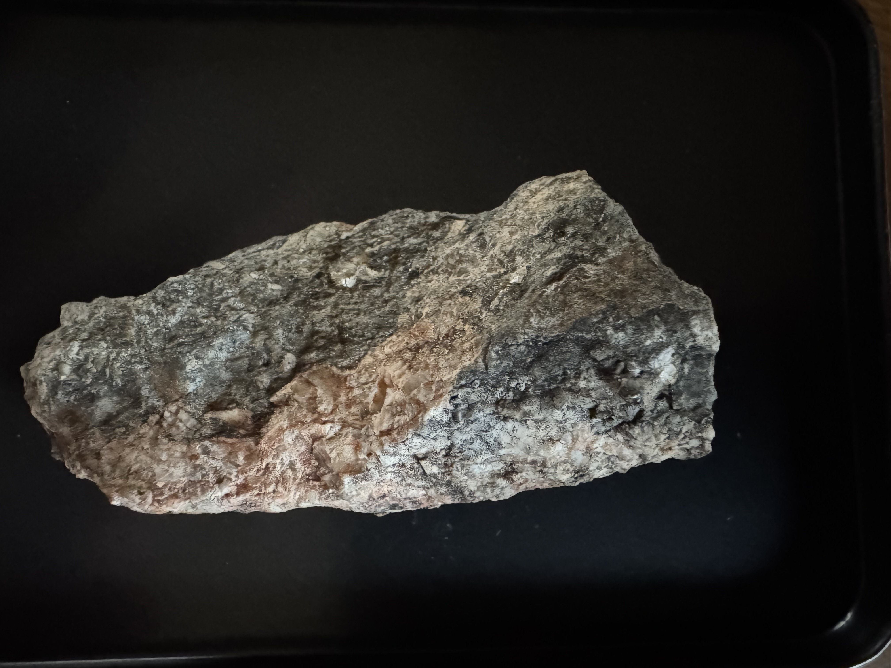

1.1 – 1.3 billion years old · Mesoproterozoic · Riner, Virginia
There is a scar running through Virginia. It is the structural spine of the entire Blue Ridge — 300 miles long, older than the Appalachians, older than fish, older than anything that has ever left a footprint on this earth. It runs from central Virginia south into North Carolina. It runs through Shenandoah. It runs through the Great Smoky Mountains corridor. And it runs through land along Laurel Ridge Mill Road in Riner, Virginia.
The rock it exposes is between 1.1 and 1.3 billion years old.
Continue reading
I — The Rock
When people hear that the Appalachian Mountains are among the oldest on Earth, they picture old rock. They are right about the mountains — but wrong about what old means here. The Appalachians as a landform began taking shape around 480 million years ago, during the Taconic Orogeny, and reached their current form around 300 million years ago when Africa collided with North America during the assembly of Pangaea. Those are genuinely ancient mountains.
But the rock in the Blue Ridge is not 300 million years old. It is not 480 million years old. The Blue Ridge is not built of Appalachian-age material. It is built of Grenville-age basement rock — the deep crustal foundation that was already ancient when the Appalachian mountain-building events began. The mountains came later. The rock was already there, and the mountains were built around it and on top of it.
To say the Appalachians are old is true. To say the rock in the Blue Ridge is old in the same breath is like saying both a house and its foundation are the same age. The Fries Fault exposes that foundation — 1.1 to 1.3 billion years old — at the surface, at river level, in a county most people drive through without stopping.
Rock this old exists in other places: at the bottom of the Grand Canyon, a mile below the rim, reachable only by multi-day expedition. In the cores of mountain ranges in Canada. In scattered outcrops in the Adirondacks and Minnesota. It does not, by any reasonable expectation, belong at the surface in a river valley in Montgomery County, Virginia. It is here because of the Fries Thrust Fault.
This is what 1.1 billion years looks like in your hand. The rock is gneiss — dark blue-gray at its base, banded through with pale cream and pink where feldspar crystals have grown and fractured. The banding is not sedimentary layering. It is foliation — the physical record of compression so extreme, sustained over so long, that the minerals within the rock reorganized themselves into parallel bands. You are looking at the texture of a mountain range that no longer exists.
The gray matrix is dense with biotite — a dark mica mineral — giving the rock its characteristic blue-gray cast in shadow and a faint metallic shimmer in direct light. The pale zones are feldspar-rich, coarser-grained, with blocky crystal faces that catch light at sharp angles. Where the rock has broken fresh, those faces are white and glassy. Where it has weathered, they go pink and ochre.
This specimen came from along the Little River on Laurel Ridge Mill Road. It is not unusual rock for this formation. It is exactly what the Fries Fault exposes at the surface here — the deeply eroded root of a Himalayan-scale mountain range, held in one hand.

II — Deep Time · 1.1 — 1.3 billion years ago
None of the following had appeared on Earth
The Atlantic Ocean
The Appalachian Mountains
North America
Fish
Insects
Plants of any kind
Multicellular life of any kind
Eyes —
anywhere on Earth
Voluntary movement
Breathable oxygen
The Mesoproterozoic — what scientists call "The Boring Billion"
The sky was not blue. The atmosphere had oxygen, but only a fraction of today's levels — too thin to support an ozone layer thick enough to block ultraviolet radiation, too thin to breathe. The oceans were mostly anoxic below the surface, rich in dissolved iron and hydrogen sulfide. The shallow coastal waters were green and rust-colored, stained by iron oxides and the chemistry of a world without complex life to process it.
The land was bare rock and sediment. There were no soils — soil requires roots and organisms to form it, and there were none. There were no braided river banks held in place by vegetation, because there was no vegetation. Wind moved sediment freely across an entirely bare surface. No footprint was ever made on this land. No sound was made by anything that moved of its own will.
The dominant life form was stromatolites — layered mounds built by microbial mats, mostly cyanobacteria, growing in shallow water. They had been the dominant life form for a billion years already, and they would remain so. The fossil record of this period is so sparse and so unchanging that geologists named this interval "the Boring Billion" — roughly 1.8 to 0.8 billion years ago, a stretch of time in which oxygen levels barely changed, evolution seemingly stalled, and the planet sat in a long, quiet equilibrium.
The sun was about 85% as bright as it is today. The day was shorter — Earth rotated faster, so a day lasted roughly 18 to 20 hours. The moon was closer and the tides were higher. The planet was recognizably Earth in its physics but alien in every detail that makes Earth feel like home.
There were no plants — not even simple ones. The first land plants don't appear in the fossil record until roughly 470 million years ago — and those were simple, rootless, moss-like organisms clinging to wet rocks. Before that, the soil on land was poor in nutrients and had almost no capacity to hold water, because soil requires roots and organisms to form it, and none existed. Every continent on Earth looked like the surface of Mars: bare rock, bare sediment, mineral colors only. Anything green visible to the naked eye existed only in shallow water. Nothing green existed anywhere on land.
This is when the rock along Laurel Ridge Mill Road formed.
III — The Mechanism

Click to watch on YouTube · The purple band (Grenville, 1.2–0.9 Ga) is the outermost growth ring — the rock exposed at the Fries Fault.
Image and video credit: Walter Jahn
Anyone with a passing interest in science has heard of Pangaea — the supercontinent where all the landmasses were joined together, where you could theoretically walk from North America to Africa. It existed from roughly 335 to 175 million years ago, and its breakup opened the Atlantic Ocean and set the continents drifting toward their current positions. Pangaea is the one that shows up in textbooks and documentary films. It feels ancient.
It is not nearly old enough.
To understand what follows, one more concept: Laurentia. Laurentia is the name geologists give to the ancient stable core of what would eventually become North America. It is not the same thing as North America — it is older, smaller, and far more fundamental. Geologists call it a craton: the thick, tectonically quiet, ancient foundation around which younger rock accretes over billions of years. Think of it as the original continent, onto which everything else was later added. When geologists talk about the eastern margin of Laurentia, they are talking about the edge of that original core — the boundary where new material was being added, where ocean was closing, where mountains were being built. The rock at the Fries Fault formed at exactly that margin.
The rock along Laurel Ridge Mill Road formed during the assembly of a different supercontinent entirely: Rodinia. It existed from roughly 1.2 billion to 750 million years ago — assembled by the same kind of continent-to-continent collision that built Pangaea, but 900 million years earlier. The collision that produced it — the Grenville Orogeny — built a mountain range comparable in scale to the modern Himalayas along what is now the eastern margin of North America. The rock exposed at the Fries Fault is the deeply eroded root of those mountains. By the time Pangaea was forming, Rodinia had already assembled, broken apart, and been gone for hundreds of millions of years.
When Rodinia broke apart, it opened an ocean. Not the Atlantic — that came much later. This was the Iapetus Ocean, a vast body of water that separated the fragments of Rodinia and eventually covered what is now the eastern United States. You have never heard of the Iapetus Ocean because it no longer exists. It closed. The closing of the Iapetus Ocean — as the landmasses converged again toward Pangaea — drove the Taconic Orogeny, which reactivated the Fries Fault and pushed this billion-year-old rock upward to where it sits today.
The sequence, in full: the rock forms during the Grenville Orogeny and the assembly of Rodinia. Rodinia breaks apart, the Iapetus Ocean opens. The Iapetus Ocean closes, driving the Taconic Orogeny, which reactivates the Fries Fault. The fault pushes the rock to the surface. Erosion strips the overburden away. And here we are.
The ocean you have never heard of is why the rock is here.
Now consider what came after this rock formed — and how much later:
This is the world the rock at your feet formed in.
III — The Mechanism (continued)
A fault is any fracture in the Earth's crust along which two bodies of rock have moved relative to each other. There are several kinds, distinguished primarily by the direction of movement. A thrust fault is a specific variety formed by compressional forces — when two landmasses are being pushed together, the crust has nowhere to go but up. One slab of rock is driven up and over another at a low angle, typically less than 45 degrees from horizontal. The result is that older, deeper rock ends up sitting on top of younger, shallower rock — a reversal of the normal geological order that geologists call an overthrust.

Thrust fault cross-section showing low-angle overthrust. (M. Martin)
Thrust faults differ from reverse faults primarily in the angle of the fault plane. Both involve compressional forces pushing one block upward, but a reverse fault does so at a steeper angle, greater than 45 degrees, and the displaced rock is usually visible at the surface. Thrust faults are more subtle — the displacement can be enormous, sometimes tens or hundreds of kilometers of horizontal travel, yet the fault surface itself may be nearly flat.
Because of this low angle, thrust faults often do not reach the surface at all. Of the six known thrust faults in the area represented on the Riner Quadrangle geologic map, only four surface: the Fries, Poor Mountain, Peak Creek, and Roanoke Valley faults. Two others — the Saltville and Pulaski faults — underlie the surface rocks entirely, invisible except to those who know how to read the rock record.

Riner Quadrangle geologic map showing the six thrust faults of the area. (Henika et al., Virginia Tech)
By itself, a thrust fault is not unusual. The Appalachian region is laced with them, products of the repeated continental collisions that built and rebuilt the eastern margin of North America over hundreds of millions of years. What makes the Fries Fault remarkable is not that it is a thrust fault but what it exposes, where it runs, and how old it is.
One measure of that reach: the New River — one of the oldest river systems in North America, flowing north and west across the broad Blue Ridge upland in southwestern Virginia — follows the Fries Fault for a stretch of its path. The same structure visible at river level on the Little River also shaped the course of an ancient continental drainage. The fault is not a local curiosity. It is a major feature of the eastern Appalachians.
The Fries Thrust Fault is one of three major fault zones that run the full length of the Virginia Blue Ridge, forming the structural backbone of one of the state's five distinct physiographic regions. The Blue Ridge Province stretches from Pennsylvania to Georgia in a narrow, ancient corridor that includes Shenandoah National Park, the Blue Ridge Parkway, the Appalachian National Scenic Trail, and the Great Smoky Mountains. The Fries Fault runs along its western edge near its southern extent, in the area around Riner in Montgomery and Floyd Counties.

The five physiographic regions of Virginia. The Blue Ridge Province is one of three fault zones spanning its full length. (U.S. Geological Survey)
The Fries Fault is the local name for the segment of the Hayesville-Fries-Rockfish Valley fault system (HFRV) that runs through Riner — a fault that traces the full axial length of the Blue Ridge from central Virginia southward into North Carolina. Along this entire corridor, the same basic event is recorded in the rock: ancient Grenville-age crust pushed up and over younger material. At Riner, that means Middle Proterozoic gneiss — rock formed 1.1 to 1.3 billion years ago — thrust over younger deformed rocks of the western Blue Ridge province. Riner is simply where erosion has stripped enough of the overburden away to put that boundary at the surface, within reach. This makes the exposed rock at the Fries Fault among the oldest material found anywhere in Virginia, and one of only a small number of places in the continental United States where Precambrian rock of this age is visible at the surface. The Grand Canyon's inner gorge, the Minnesota River Valley, and the Adirondack Mountains are the most familiar comparisons; the Fries Fault belongs in that same category.

The Blue Ridge Province — a narrow ancient corridor stretching from Pennsylvania to Georgia. (National Park Service)
The rocks exposed at the Fries Fault are not merely old. They are remnants of the edge of a supercontinent. Around 1.3 billion years ago, during the Proterozoic Eon, the landmass that would eventually become North America — called Laurentia — was involved in a massive continental collision that assembled a supercontinent known as Rodinia. The collision zone, called the Grenville Orogeny, built a mountain range comparable in scale to the modern Himalayas along what is now the eastern margin of the continent. The rocks exposed today at the Fries Fault are the deeply eroded roots of those mountains, brought back to the surface after more than a billion years underground by the thrust fault's action.
In other words, when you stand on the ground along Laurel Ridge Mill Road and look at the exposed rock, you are looking at material that formed in the core of an ancient mountain range built during the assembly of a supercontinent that no longer exists.
III — The Mechanism (continued)
The Earth is approximately 4.6 billion years old. The rocks at the Fries Fault formed during the Mesoproterozoic Era — a subdivision of the Precambrian running from roughly 1.6 to 1.0 billion years ago, a time when the geologic record is dominated not by fossils but by the slow accumulation and deformation of rock. Complex life did not yet exist. The immense span before 541 million years ago, called the Precambrian, encompasses roughly 88 percent of Earth's entire history — and the rocks here formed squarely in the middle of it. At that time the continents we know today did not exist. The landmass of Laurentia — proto-North America — was still being assembled from older fragments, growing outward as new material accreted to its margins.

Age context: the rocks at the Fries Fault are 1.1—1.3 billion years old, among the oldest exposed in Virginia.
Laurentia — the ancient craton at the core of North America — did not form all at once. It grew outward over billions of years in a series of distinct accretion events, each one adding a new belt of rock to the growing continent. Those growth stages are still readable in the ages of the rocks that make up North America's interior today.
The oldest material, aged 3.0 to 2.5 billion years, forms the core of what is now central Canada. Younger belts wrap around this core in successive rings: the Trans-Hudson belt (1.84—1.80 Ga), the Yavapai province (1.8—1.75 Ga), and the Mazatzal province (1.75—1.6 Ga). The outermost belt — the one that includes the Fries Fault — is the Grenville province, aged approximately 1.2 to 0.9 billion years. It runs along what was then the eastern margin of Laurentia: the collision zone. The rock along Laurel Ridge Mill Road is the outermost growth ring of the original continent.

Laurentia craton formation sequence from 3.0 Ga to 0.9 Ga. The Grenville province (purple) — the zone of the Fries Fault — is the outermost ring.
The Grenville Orogeny was one of the most significant geological events in North American history. Beginning around 1.3 billion years ago and continuing for hundreds of millions of years, it was a continent-to-continent collision that drove together the eastern margin of Laurentia and an opposing landmass in a collision zone stretching from what is now the Adirondacks of New York southward through the Blue Ridge of Virginia and into the southeastern United States.
The collision built a mountain range of Himalayan scale along Laurentia's eastern flank. These mountains have long since been eroded away — billions of years of weathering and erosion have removed the upper portions entirely — but their roots remain. The deeply buried, intensely metamorphosed rocks that formed in the core of those mountains are precisely what the Fries Thrust Fault exposes at the surface today.
The Grenville Orogeny also assembled Rodinia, the supercontinent that existed from approximately 1.2 billion to 750 million years ago, with Laurentia at its center. The boundary between Laurentia and the landmasses that collided with it runs through the Blue Ridge of Virginia — and the Fries Fault sits directly on that ancient margin.

Left: Rodinia supercontinent (~1.2 Ga—900 Ma), Laurentia at center. Right: Rodinia with Grenville-age belts (green) — rocks now exposed at the Fries Fault formed during this collision.
The rock exposed at the Fries Fault is gneiss — a coarse-grained, banded metamorphic rock that forms under conditions of extreme temperature and pressure. When rocks are buried deep in the Earth's crust — typically 10 to 30 kilometers down — they do not melt. Instead, they recrystallize in the solid state, their mineral assemblages reorganizing into new configurations stable under the new conditions. This process is called regional metamorphism.
Starting from shale, the metamorphic progression runs: shale → slate → phyllite → schist → gneiss. Each step represents higher temperature and pressure and more complete recrystallization. Gneiss, at the end of the progression, is the highest-grade regional metamorphic rock, characterized by a pronounced banding — called foliation — that reflects billions of years of compression.

The Grenville Orogeny — a continent-continent collision that built a Himalayan-scale mountain range along Laurentia's eastern margin. (Chris Talks Geology)
The gneiss at the Fries Fault formed this way during the Grenville Orogeny, as the collision drove rocks deep into the crust. When the mountains above them eroded away over hundreds of millions of years, and when the Fries Thrust Fault later pushed the basement rocks upward and over younger material, those ancient gneisses were finally brought back to the surface. The gneiss here is technically an orthogneiss — derived from igneous protoliths rather than sedimentary ones — but the metamorphic conditions are the same: extreme heat and pressure deep in the collision zone.
IV — The Scale
The Fries Thrust Fault does not announce itself. It runs underground for most of its length — buried beneath younger rock, invisible at the surface. But in the Riner area of Montgomery and Floyd Counties, erosion has stripped enough of the overburden away that the fault boundary reaches the ground. The Little River — running through this land along Laurel Ridge Mill Road — cuts directly through that exposure zone, crossing the fault trace twice as it bends through two meander loops between the Route 8 and Brush Creek bridges.
This is what makes the local geography significant. Not the river itself, but what the river has done: cut down through hundreds of millions of years of accumulated rock until it reached the fault plane, and exposed, at water level and along the banks, gneiss that is 1.1 to 1.3 billion years old. The same rock that underlies the entire Blue Ridge province — the basement on which the Appalachians were built — is here at the surface. Touchable. Walkable.

The fault's path through this area is documented on a state geological map of the Riner Quadrangle compiled by geologist Bill Henika, a Research Professor at Virginia Tech. An annotated version of this map shows the fault trace labeled clearly as the Fries Thrust Fault, running directly through the meander loops of the Little River.

The two meander loops of the Little River — Floyd County loop (left) and Montgomery County loop (right). The fault crosses through both. (Annotated aerial)

Annotated Riner Quadrangle geological map showing the Fries Thrust Fault trace through the Little River corridor. (Bill Henika, Virginia Tech)
On a geological map, the exposure shows as a narrow pink band threading through the Riner Quadrangle — narrow but continuous, marking the surface expression of rock that formed a billion years ago. On the ground, it is the rock beneath your feet.
V — The Science
The Fries Fault does not stand alone. It is the local expression of one of the great structural features of the eastern Appalachians: the Hayesville-Fries-Rockfish Valley fault system (HFRV), which runs the full axial length of the Blue Ridge from central Virginia southward through North Carolina. Every ridge, every overlook, every river crossing along that corridor sits above or beside this fault system. The Fries segment — the stretch through Riner and the Little River — is simply where the fault comes closest to the surface and reaches the ground.
The HFRV is, in a meaningful sense, the spine of the Blue Ridge. It divides the Grenville-age basement rocks of the province into two distinct massifs: the Pedlar Massif to the northwest and the Lovingston Massif to the southeast. These are not merely two rock bodies sitting side by side — they represent two crustal blocks that were separate landmasses before the Grenville collision welded them together roughly 1.1 billion years ago. The HFRV fault running between them is almost certainly the original suture line: the scar where those two blocks fused. It was later reactivated during the Taconic Orogeny (approximately 480 to 440 million years ago), when renewed compression along the Laurentian margin drove the fault back into motion and pushed the Little River Gneiss upward to its present position.
One other consequence of this fault’s reach is worth noting. The New River — one of the oldest river systems in North America, flowing north and west across the broad Blue Ridge upland — follows the Fries Fault for a stretch of its path through this area. The fault that exposes billion-year-old rock along Laurel Ridge Mill Road also shaped the course of one of the continent’s most ancient rivers.
The HFRV fault system dividing the Pedlar Massif (northwest) from the Lovingston Massif (southeast). (JMU Virginia Geology)
The most precise published description of this specific fault zone comes from a 1994 Virginia Tech thesis by Richard Whitmarsh, who conducted detailed structural field work along the Fries Fault south of Riner. His definition remains the standard academic characterization of what is happening in the rock beneath the Little River:
"The Fries fault zone south of Riner, Virginia is marked by a ductile, greenschist-facies thrust that places Middle Proterozoic gneiss over deformed Late Proterozoic(?)—Early Paleozoic rocks of the western Blue Ridge province."
— Richard Whitmarsh, Virginia Tech, 1994Ductile thrust refers to plastic, rather than brittle, deformation — the fault formed deep in the crust where rocks flow under heat and pressure rather than fracture. Greenschist-facies describes moderate metamorphic conditions (roughly 300—500°C), cooler than the peak Grenville metamorphism, suggesting the rocks had already partially cooled before thrusting. The phrase Middle Proterozoic gneiss over deformed Late Proterozoic(?)—Early Paleozoic rocks captures the core of the fault's significance: older rock thrust over younger rock, reversing the expected stratigraphic order.
The age of the rocks has been established through uranium-lead (U-Pb) geochronology of zircon crystals within the gneiss. Three independent dating studies have produced consistent results: Sinha and Bartholomew (1984) obtained 1,130 Ma; T.W. Stern and D.W. Rankin obtained 1,117 Ma and a complementary ²⁰⁷Pb/²⁰⁶Pb age of 1,116 Ma. All three converge on approximately 1.1 to 1.13 billion years, firmly placing these rocks in the Mesoproterozoic and confirming their Grenville-age origin.

USGS GNULEX database entry for the Fries Thrust Sheet — U-Pb zircon ages converging on 1,116—1,130 Ma.
Patti Boyd Kaygi's structural field maps of the Riner area show mafic dikes and sills — labeled Pz(?)b — intruding through the Precambrian basement rocks on both sides of the fault. These intrusions are the signature of Late Proterozoic rifting: after Rodinia assembled, it began to pull apart, and hot mantle material intruded upward into the crust, leaving trails of iron- and magnesium-rich rock cutting through the older gneiss.


Kaygi field map showing mafic dikes and sills (Pz(?)b) intruding through Precambrian basement rocks at the fault zone — evidence of Late Proterozoic rifting after Rodinia assembled.
Richard Whitmarsh's field maps from his 1994 thesis show the fault trace itself running through the Little River area, with numbered sample collection sites across both the Pilot Gneiss to the north of the fault and the Little River Gneiss to the south. The two units are distinct rock bodies with somewhat different characteristics — the Little River Gneiss a bluish-gray quartz-feldspar biotite augen gneiss (augen, from the German for "eyes," refers to the lens-shaped feldspar crystals visible in the rock's banding), the Pilot Gneiss a pale-orange-pink, medium-grained, faintly foliated rock — yet both are Grenville age and both bear the deformational imprint of the thrust.


Fig. 4: Hornblende-rich phase of Pilot Gneiss (Sample #432, scale bar = 1 cm). Fig. 5: Hornblende-free phase of Pilot Gneiss, outcrop at Pilot along Rt. 615. (Whitmarsh, 1994)


Whitmarsh (1994) sample location map: fault trace ("FRIES") running through the Little River area, with Pilot Gneiss to the north and Little River Gneiss to the south.
All of this — the supercontinent, the Himalayan mountain range, the billion years of burial and erosion and thrust — is still present in the rock. The fault is not a historical event. It is a structural fact, still expressed in the landscape, still shaping the course of rivers, still defining the western edge of the Blue Ridge. The rock on the surface of the ground along Laurel Ridge Mill Road formed in the collision zone of a supercontinent that no longer exists. It has been here, in one form or another, for longer than multicellular life has existed on Earth. You do not need a canyon to find it. It is here. It runs through this land.
Further reading
Academic Papers & Theses
Geological Maps & Field Data
Online References
Video Resources